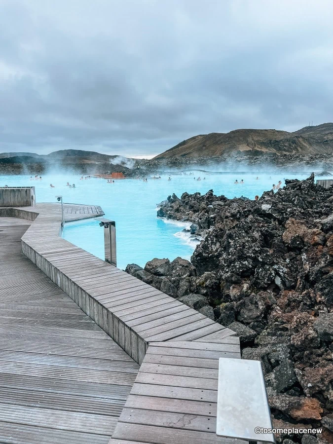
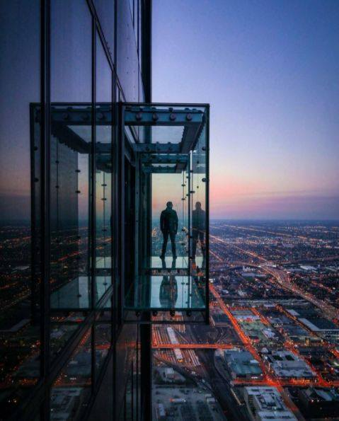

MY FAVOURITE SPOTS





The Azores, Portuga
The Azores, an autonomous region of Portugal, are an archipelago in the mid-Atlantic. The islands are characterized by dramatic landscapes, fishing villages, green pastures and hedgerows of blue hydrangeas. São Miguel, the largest, has lake-filled calderas and the Gorreana Tea Plantation. Pico is home to the 2,351m Mt. Pico and vineyards sheltered by boulders.